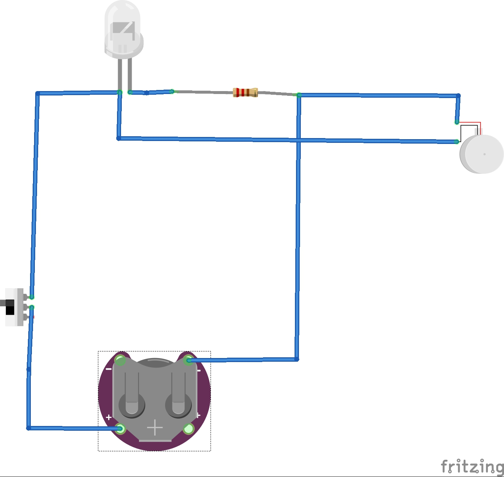
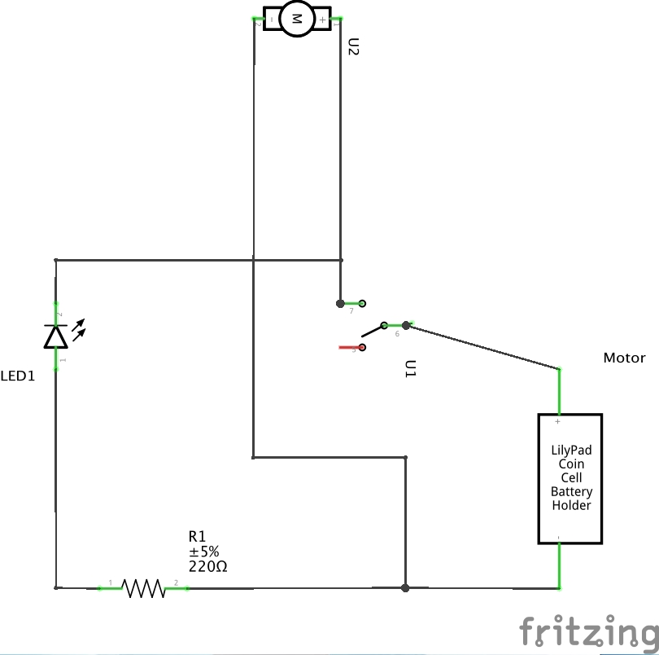

Project 2: Brushbot
For this project we made a 'Brushbot' which moves around and lights up. We accomplished this by taking the head of a toothbrush and gluing all the parts like battery and electronics on top of it and wiring according to the diagrams.
 What the project required was wiring up a vibrating motor and LED with resistor to a 3V CR2032 battery. I did this by using one of the coin cell battery holders from our parts list however this one was made with two CR2032s in mind and couldn't complete the circuit without it as negative was on one battery and positive was on the other. So I got around this by putting a dime in the other slot which completed the circuit without overloading the parts using two batteries, however it did make it more heavier which is why it doesn't move very much. But the battery holder had the advantage of a built in switch on it and did fit balanced on top of the brush without it falling over.